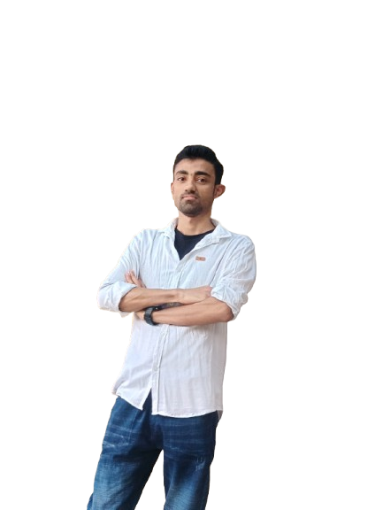
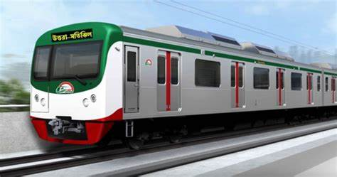
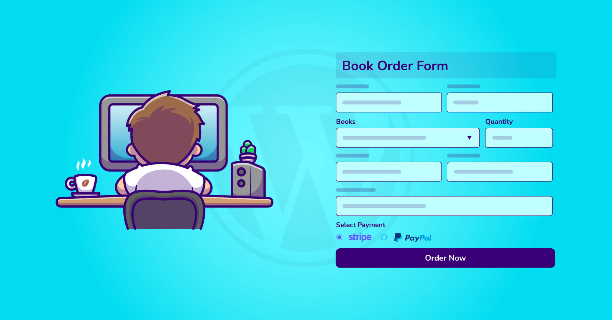

Research and Machine Learning
Working on efficient deep learning architectures for constrained environments, with interest in practical deployment and optimization.
Final-year CSE undergraduate at KUET
I am Md. Robiul Islam, a Computer Science and Engineering student at KUET graduating in 2026. My recent work spans machine learning research, Android apps, backend systems, and competitive programming.
About Me

I am passionate about machine learning, software engineering, and academic research. My thesis work focuses on low-compute vision architectures for resource-constrained environments, where I applied mixed-precision quantization on Vision Transformers for more efficient edge deployment.
Alongside research, I enjoy building practical systems: Android applications, backend-driven web products, and recommendation tools. I also maintain a steady competitive programming habit that strengthens my algorithmic thinking.
Core Focus
Working on efficient deep learning architectures for constrained environments, with interest in practical deployment and optimization.
Built Android and iOS projects using Java, XML, Swift, and SwiftUI with local storage, Firebase, and clean architecture patterns.
Hands-on with Laravel, Django, Spring Boot, and SQL-backed products for recommendation, commerce, and management workflows.
Selected Work

Android ticketing app with admin and user roles, route search, schedule management, and booking flow.
Open ProjectTeam-built Android app for blood pressure and heart-rate tracking with offline and online data synchronization.
Open Project
Full-stack web platform that uses machine learning and hybrid recommendation methods for Bangla readers.
Open ProjectResponsive e-commerce application with registration, product browsing, and checkout management.
Open ProjectConsole-based OOP system for donor and acceptor workflows with admin-controlled records for KUET-focused use.
Open ProjectTeam iOS application with a clean interface for browsing and exploring recipes using SwiftUI.
Open ProjectAchievements
Contact